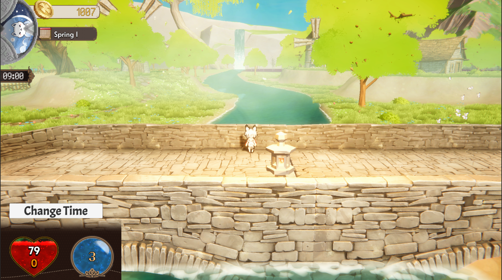
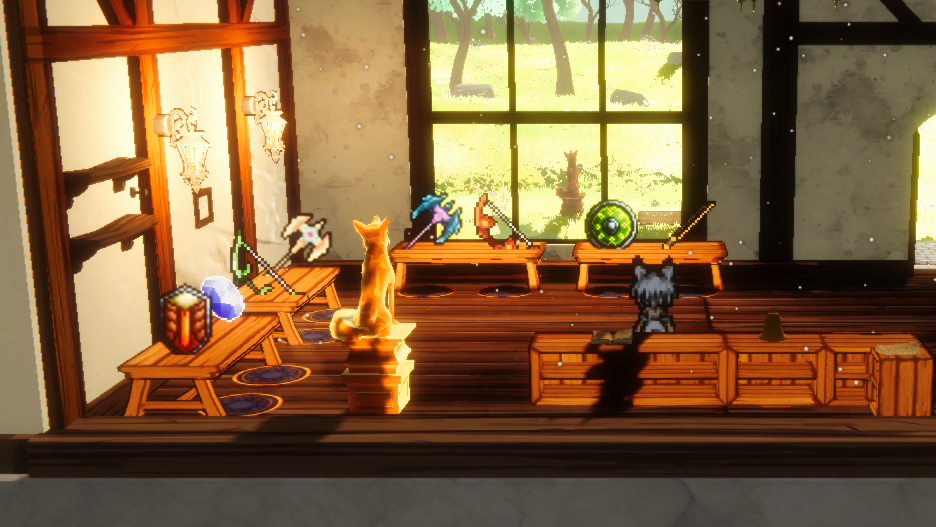
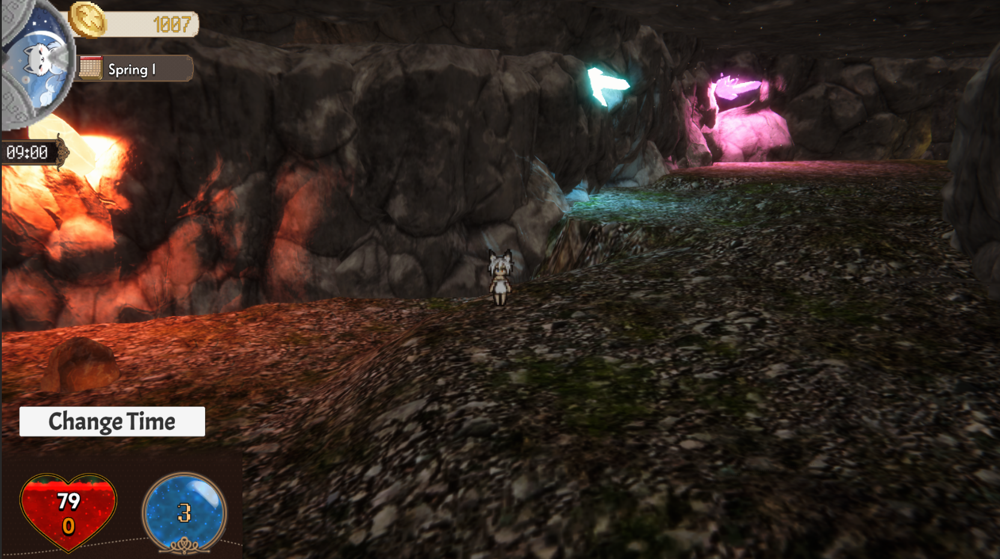
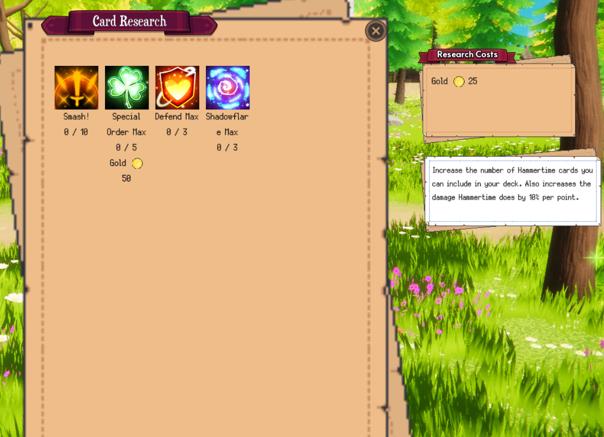
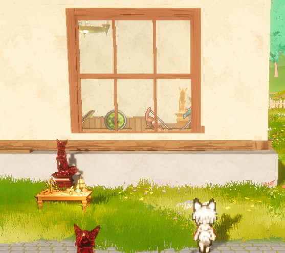

The Concept
WEISS begins with a premise that's both comedic and melancholy: you set up your item shop in front of the final dungeon, expecting to profit from the hero's legendary run. The hero never came. The demon lord waited. The world's economy, built around the eternal conflict between light and dark, simply... stalled.
Now you're the one who has to fix it — not by being a hero, but by being a merchant. You work both sides. You sell potions to adventurers and reagents to monsters. You broker a fragile peace through commerce. You rebuild a town that had given up on itself. The game is named WEISS — which sounds like Vice — because doing good in a broken world sometimes requires playing all the angles.

"Most RPGs ask you to save the world through strength. WEISS asks you to save it through trade — and leaves open the question of whether that's heroic or just pragmatic."
Core Systems
The shop and economy. Like its spiritual predecessor Recettear, WEISS centers on running an item shop — buying low, selling high, managing demand and supply. But the economy is dynamic: market demand shifts based on in-game events (a monster surge drives up potion sales; a peaceful week tanks weapon prices). Players can specialize in different crafting disciplines to control their own supply chains.
Town rebuilding. The surrounding town is derelict when you arrive. As you generate income, you can invest in rebuilding structures — each one unlocking new characters, new inventory, or new systems. Crucially, you can invite both adventurers and monsters to take up permanent residence, housing them in buildings you restore.
The relationship system. Residents develop relationships with each other dynamically over time. Adventurers and monsters placed in the same housing will interact, build trust or friction, and eventually form adventuring parties — with stats and abilities shaped by those relationships. Every playthrough generates different configurations, making the social simulation meaningfully replayable.
Deck-building ATB combat. When your player character ventures out, combat uses a hybrid system: you build a deck before battle, but cards are played in real-time ATB style — enemies attack continuously while you manage a regenerating resource pool to play cards. This creates genuine tension that pure turn-based deck-builders don't have.
Gathering and crafting. A deeper resource loop than most shop simulators: you explore the world to gather materials, which feed into crafting recipes, which produce items to sell or use. Specializing in alchemy, smithing, or cooking creates distinct playstyles and economic advantages.
The Ancient Cave system. A procedurally generated dungeon with its own loot table and exploration logic — a direct nod to Lufia II's legendary Ancient Cave — provides an infinitely replayable late-game loop for players who want pure dungeon-crawling.



Key Design Decisions
Moral ambiguity as the central mechanic. The player isn't the hero — they're the merchant who profits from the conflict between heroes and villains. This reframes the entire JRPG genre: instead of asking "who wins?", WEISS asks "who benefits?" That question turns out to be rich enough to drive a whole game.
The dynamic relationship system. Organizing cohabitation between monsters and humans and watching emergent relationships develop was the most ambitious design decision in WEISS. It required building a reputation and relationship tracking system, behavioral rules for NPC interactions, and a party formation logic that reflects those relationships in combat stats. The payoff is a game that feels different every run because the social fabric of your town is never the same twice.
Hybrid ATB deck combat. Pure deck-builders (Slay the Spire et al.) are satisfying but slow. Pure ATB games are fast but shallow. The combination — build a deck, play it in real time under pressure — was harder to tune than either system alone, but creates a combat experience that rewards both preparation and instinct.
Visual tone mixing. WEISS deliberately mixes warm, cozy interior aesthetics (the shop at dawn, the crafting shed in afternoon light) with stark nocturnal dungeon environments (neon purple, metal scaffolding, candlelight). This tonal contrast reflects the game's moral duality — the same world that contains your cozy shop also contains something much darker beneath it.

What I Built
WEISS has been in development for several years as a solo project built entirely in Unity. Current implemented systems include: the full shop economy with dynamic demand events, the town rebuilding framework, housing and NPC placement, the relationship and party formation system, the hybrid ATB deck-building combat, gathering and multi-discipline crafting, the procedural dungeon system, a full day/night cycle with time-based events, and the character equipment and stat system. Visual assets are licensed from the Unity Asset Store; all systems, architecture, design, and writing are original.
What I'd Do Next
The relationship system is the heart of WEISS but also its least polished element — the behavioral rules for NPC interaction need more granularity, and the visual feedback for relationship development (how do you show a monster and an adventurer becoming genuine friends?) deserves a dedicated design pass. Beyond that, the narrative layer needs more work: the game has strong systemic bones but the story of why you're there and what you're working toward needs to be woven more explicitly into the moment-to-moment play.